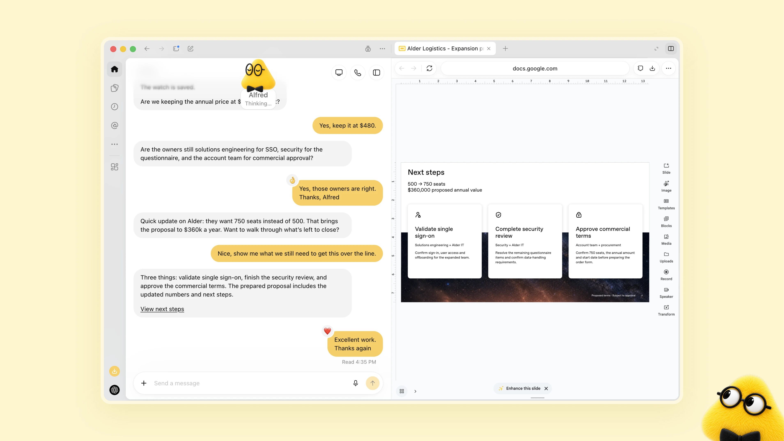
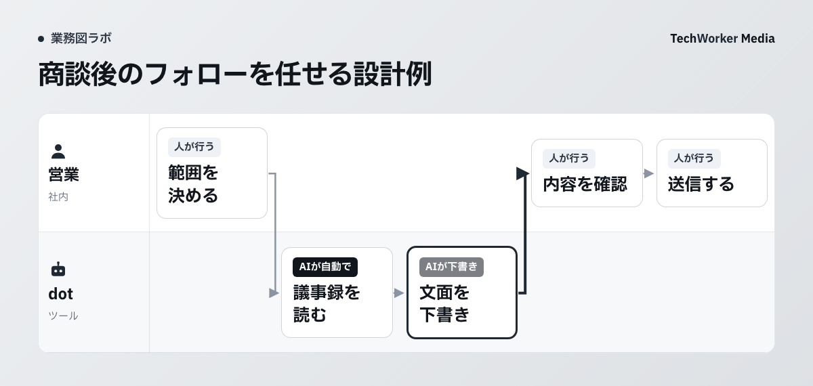

OpenAIのdotsは、どんな仕事を任せられますか？
dotsは、会話していない間も資料の確認や更新を進めます。公式の営業例では、提案の準備と人の承認を分けています。
OpenAIは2026年9月29日にdotsを発表しました。会話をしていない間も仕事を進めるエージェントです。エージェントとは、目標に沿って作業を進めるAIです。GPT-6 Astraを搭載し、専用のクラウドコンピューターで動きます。

出典：OpenAI「dotsのご紹介」（2026年9月29日公開、2026年10月3日確認）。
公式画面で見る、AIの作業と人の判断
左側では、黄色いdotのAlfredと人が価格や担当を確認しています。右側には、法人向け提案の次の工程を記した資料があります。認証の検証、セキュリティ審査、契約条件の承認の3つです。
公式の営業例では、顧客の要件と製品資料を照合します。要件が変わると、提案書やテスト計画を更新します。未解決の懸念も人へ知らせます。顧客に約束する内容は、営業とエンジニアが承認します。
この画面だけで、社内の承認範囲までは決まりません。以下では、TechWorkerが公開した商談業務図を使います。AIの下書きと人の送信を分ける設計を見ていきます。
任せる前に、工程・承認・止める条件を決めます
任せる工程、事前承認の範囲、止める条件と引き継ぎ先を決めます。この3つを業務図へ書いてから、dotに仕事を渡します。
部署で使うときは、完了した成果と承認が必要な操作を分けます。文面の下書きができた時点で、その工程は完了にできます。送信まで任せるかは、別の工程で決めます。仕事の名前だけを渡すと、この区切りが曖昧になります。
dotsには、操作の確認方法を決める4つのカスタムルールがあります。ただし、ルールを設定しても間違いは起こります。人が結果を確認する工程も、業務図に残してください。
以下では、営業のフォロー文面を例に説明します。任せる対象は承認済みの議事録に限ります。顧客への送信は営業が担当する設計です。製品の機能と提供条件は、公式資料で確認しました。確認日は2026年10月3日です。
出典：OpenAI「dotsのご紹介」、dotスタートガイド。
TechWorkerの商談業務図は、dotsの担当を考える際にどう使えますか？
公開済みの商談業務図では、AIの下書きと人の送信を分けています。この区切りをdotの担当範囲にも使います。
TechWorkerは「1回目商談」の業務図を公開しています。工程6は「フォロー文面を下書き」です。工程7は「送信・台帳に記録」です。下書きはAIが担当し、送信と記録は人が行います。
TechWorkerには、dotsを使った実績はまだありません。公開済みの工程を土台に、任せ方を考えます。
図の担当をdotに置き換えるだけでは、設定は決まりません。どの議事録を読むか、どこに下書きを置くかも決めます。送信先の選択や台帳の変更が、下書きに混ざらないようにします。
公開済みの図には、担当と使うシステムも記されています。これを見ながら、dotに必要な情報を選べます。接続するアプリは、対象の工程に必要なものから決めます。工程の隣に、読んでよい資料と触らない対象を書きます。
この業務図は、CompanyMap AIの画面をもとに作成しました。CompanyMap AIは、AIの聞き取りで部署の業務フローを業務図にするサービスです。担当者間の受け渡しを確かめる土台として使えます。
出典：TechWorker「AIに任せる業務の決め方」。公開済みの商談図と本文を、2026年10月3日に確認しました。
dotsに任せる前に、業務図へ何を書きますか？
工程の担当と成果物を決め、承認の対象を絞り、停止時に人へ戻す条件まで、3つの手順で書き込みます。

1．任せる工程と、完成した状態を書きます
まず、ひとつの商談後のフォローを対象にします。部署の仕事をまとめて渡すと、完了の確認が難しくなります。下書きまでをひとつの工程として切り出してください。
次の流れは、dotsを使う場合の運用の設計例です。TechWorkerがdotsで実行した結果ではありません。
- 営業が、対象資料と読む範囲を決めます。
- dotが、承認済みの議事録を読みます。
- dotが、フォロー文面を下書きします。
- 営業が、内容と宛先を確認します。
- 営業が、送信します。
dotの成果物は、確認できる場所に置いた下書きです。本文に使った議事録の箇所も、営業へ渡す設計にします。根拠のない金額や納期を補わないことも指示します。完成した下書きと、未確認の項目を一緒に受け取ります。
下書きが長い場合も、完了条件は変えません。営業が内容を確認できることを、受け渡しの基準にします。確認する人が見つからない状態では送信へ進めません。業務図では、その手前に人の確認を置きます。
2．事前承認の対象を、操作ごとに書きます
「フォローを任せる」だけでは、承認の対象が広くなります。読み取り、下書きの作成、送信を別の操作として書きます。今回の設計例では、読み取りと下書きの作成を依頼します。営業の確認と送信は、人の担当として残します。
公式ヘルプの「事前承認済み」は、明示的な依頼を指します。プロンプトで、その操作を依頼したという意味です。一度の依頼を、今後すべての送信への承認に広げないでください。
依頼文には、対象の議事録、期間、成果物の置き場所を書きます。読取専用にする資料と、作成してよい下書きを区別します。既存の顧客情報を変更しないことも、同じ依頼に記します。前回の下書きを参考にする場合は、使ってよい資料として指定します。
たとえば「この議事録からフォロー文面を下書きしてください」と依頼します。続けて、対象資料と下書きの置き場所を指定します。「送信は営業が行います」と、担当の区切りも書きます。これは社内で承認範囲を決めるための記載例です。
3．止める条件と、引き継ぎ先を決めます
資料にない金額や納期が必要になったら、その項目で止めます。議事録と依頼内容が食い違う場合も、人へ戻します。宛先が複数候補になった場合は、営業が確認します。dotに推測で埋めさせない項目を、先に決めておきます。
引き継ぎ先は「担当者」だけでは足りません。商談担当の営業と、不在時に確認する責任者を決めます。引き継ぐ内容は、未確認の項目と根拠の資料です。作業がどこまで終わったかも、同じ場所へ残します。
人が承認した後も、再開する工程を指定します。納期の確認だけなら、該当箇所を直して下書きに戻します。その承認を送信の許可まで広げないようにします。承認した操作と、完了した操作を工程ごとに照合してください。
出典：dotスタートガイドの動作設定と承認。手順の営業例は、TechWorkerによる運用設計の解説です。
dotsへ仕事を任せたとき、どんな失敗を想定しますか？
依頼の範囲が広がる、下書きが未確認で送られる、停止後の引き継ぎが宙に浮く、という失敗を想定します。
ここで挙げるのは、運用設計上の想定失敗例です。TechWorkerがdotsで経験した事故ではありません。
「フォローして」が送信まで含むと受け取られます
下書きのつもりでも、依頼の中に送信まで含む表現が残ります。業務図に送信の担当がなければ、確認の区切りも曖昧です。読み取り、下書き、送信を別の工程に戻します。依頼文とカスタムルールの対象を、同じ操作名で合わせます。
確認者が、文面だけを見て承認します
読みやすい文面でも、宛先や金額に誤りが残る場合があります。確認の工程には、見る項目も書いてください。この営業例では、議事録との一致、宛先、金額、納期を見ます。未確認の項目が残れば、送信の工程へ渡しません。
作業は止まっても、誰も引き取りません
人への引き継ぎを設定しても、社内の担当が不明なままです。商談担当と不在時の責任者を、業務図へ記します。止まった項目を確認する場所も揃えます。再開する工程が決まるまで、下書きの作成は完了扱いにしません。
OpenAIは、dotがルールに従う際も間違うと説明しています。自動レビューや安全要件があることと、成果の確認は両立させます。人が何を見て承認したか、記録を残す運用を勧めます。
4つのカスタムルールは、業務図の3つの札にどう対応しますか？
自動実行、下書きと確認、人の実行という3つの札へ、操作の承認条件を見ながら4つのルールを対応させます。
次の表は、TechWorkerによる対応の解説です。OpenAI公式の分類表ではありません。製品のルールは操作の承認条件を表します。業務図の札は、工程を誰がどこまで進めるかを表します。
| dotsのカスタムルール | 業務図の札 | 営業例での決め方 |
|---|---|---|
| 確認なしで実行 | AIが自動で | 対象と範囲を決めた読み取りに使う候補です。 |
| 事前承認済みの場合に実行 | AIが自動で（範囲限定） | 明示的に依頼した読み取りや下書きに限ります。 |
| 実行前に確認 | AIが下書き・人が確認 | 実行の前に人が承認する工程を置きます。 |
| ユーザーに引き継ぎ | 人が行う | 宛先の確認や送信を営業へ戻す設計です。 |
事前承認の札で自動にするのは、明示的に依頼した操作だけです。下書きまでを依頼したなら、成果は下書きです。送信の担当は、そのまま人に残ります。常時自動の札へ一括で置き換えないでください。
カスタムルールを設定しても、組み込みの安全要件は適用されます。操作は自動レビューで確認されます。図の札は、製品の安全要件を外すためのものには使えません。
dotsは日本で使えますか？料金はどうなりますか？
日本は提供対象です。ProとBusiness Premiumの最初のdotは追加料金なしで、順次提供されます。
Proの対象は、欧州経済領域、スイス、英国を除く地域です。日本はChatGPTの対応国リストに載っています。この条件を照合すると、日本は提供対象に含まれます。ただし、アカウントで使えるまで数日かかる場合があります。
Business Premiumは、ChatGPTの対応地域で提供されます。Enterpriseは、管理者が有効にするとベータ版を試せます。EduとHealthcareも含まれ、提供開始時はオフです。利用可否は、自社のプランと管理者設定で確かめてください。
公式のPro料金は、月100、200、500米ドルの3段階です。最初のdotはProとBusiness Premiumのプランに含まれます。日本で支払う金額は、購入画面で確認してください。
dotとの会話は、ChatGPTの利用上限に計上されません。CodexやChatGPT Workで行うタスクは、通常どおり計上されます。最初の1か月は、高度な作業の上限が拡大されます。契約前に、公式ページでプラン別の利用枠を確認してください。
出典：dotスタートガイド、ChatGPTの対応国、Proの料金、ChatGPT料金ページ。確認日は2026年10月3日です。
dotsを使い始めるとき、何を確認すればよいですか？
作成する端末、承認の対象、情報の保存と削除を確認し、対象プランで利用できることを確かめて始めます。
作成はデスクトップアプリか、パソコンのウェブ版で行います。モバイルでは作成できず、モバイルのウェブ版も非対応です。作成後は、利用可能になればモバイルアプリで会話できます。
事前承認済みとは、プロンプトで操作を明示的に依頼したことです。下書きの依頼を、今後すべての送信への承認に広げないでください。送信まで任せるかは、対象の操作と社内の承認範囲を確認します。
必須ではありません。dotは専用のクラウドコンピューターを持ちます。自分のパソコンへのアクセスは任意で、初期状態ではオフです。対象の工程に必要かを確認してから接続します。
接続を解除しても、dotが取得済みの情報は削除されません。削除にはdotのリセットが必要です。リセットでは会話、保存済みメモリ、予定済みタスクも削除されます。削除対象を確認してから操作してください。
部署で試すために、最初に何をしますか？
ひとつの業務を選び、dotが作る成果と人が行う操作を分け、承認範囲と引き継ぎ先を1枚の業務図へ残します。
営業フォローなら、議事録の読取から下書きまでを切り出します。担当の営業が、内容と宛先を確認して送信します。対象資料、承認範囲、止める条件を、その工程の隣へ書きます。図と依頼文が一致した状態で、利用の準備を進めてください。
工程の抜けや担当間の受け渡しが分からない場合は、聞き取りから始めます。CompanyMap AIは、AIの聞き取りで部署の業務フローを業務図にします。自部署の工程を確認したい方は、CompanyMap AIへご相談ください。
この記事は、どの資料をもとにしていますか？
OpenAIの発表、ヘルプ、料金、対応国の公式資料と、TechWorkerの公開済み商談業務図を根拠にしています。
製品情報の確認日は2026年10月3日です。営業の設計例と対応表は、TechWorkerの解説です。dotsの利用結果を示すものではありません。
- OpenAI「dotsのご紹介」。2026年9月29日発表。
- OpenAI「dotスタートガイド」。4つのルール、提供条件、設定と削除。
- OpenAI「ChatGPT Supported Countries」。日本の記載を確認。
- OpenAI「About ChatGPT Pro tiers」。米ドルの月額料金を確認。
- ChatGPT料金ページ。Proの機能一覧を確認。
- TechWorker「AIに任せる業務の決め方」。公開済み「1回目商談」の工程を使用。